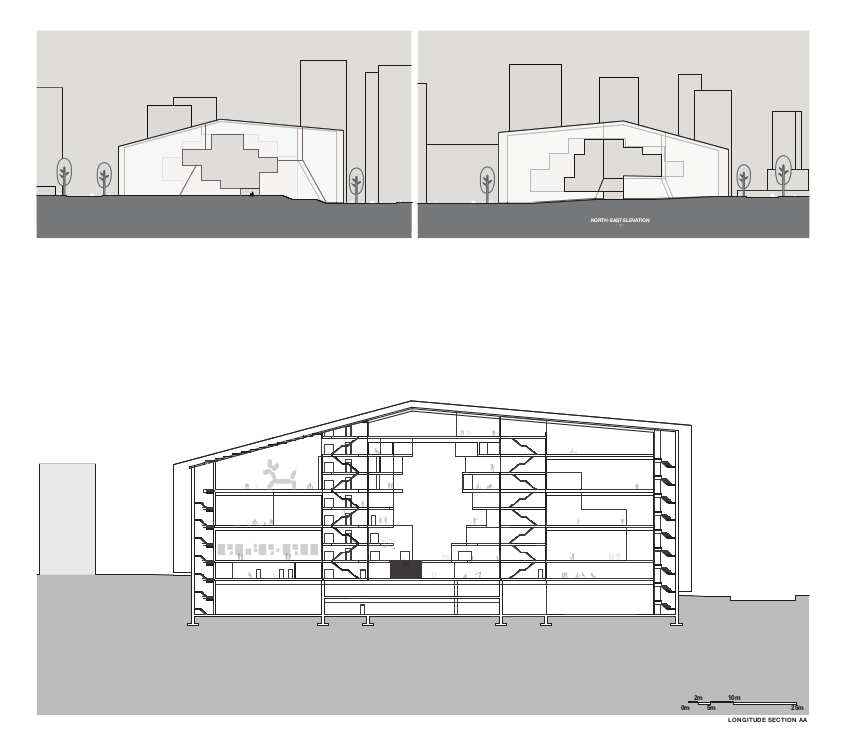
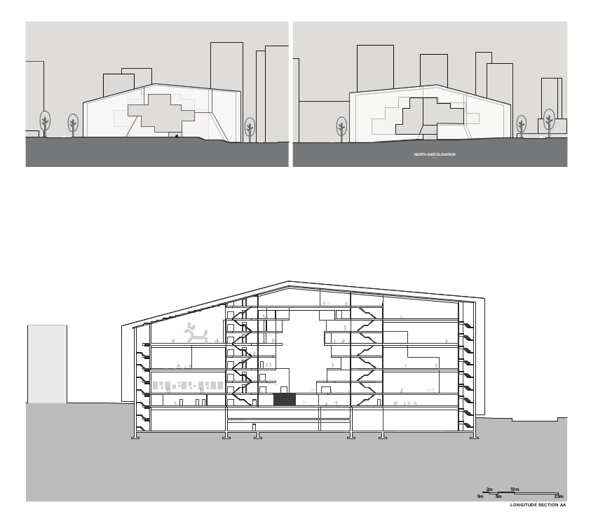

Portal
Reconceptualize the Vancouver Art Gallery
Design Studio, UBC School of Architecture and Landscape Architecture
Critic: Chris MacDonald
Collaborated with Jessyca Fan
Design 50%, Drawing and Rendering 60%, Digital Modeling 70%, Fabrication 50%
The intent of this project is to re-conceptualize the new Vancouver art gallery through a thorough investigation of the global and local gallery culture, the relationship between the city, people and artworks. Then these aspects are contextualized through a series of technical study and exploration.
The concept sketch “Portal” proposed a new relationship between artworks, people and city. Instead of artworks in the heart to be protected and surrounded by the public programs, a “cut out” space that sliced through art collection and exhibition, spaces and pro- grams, art gallery and city were proposed as the public space and the gallery space were then push to the perimeters. The resulted space hence created a highly concentrated yet shifting experiences to encourage multi-disciplinary collaboration and inspiration.
 
